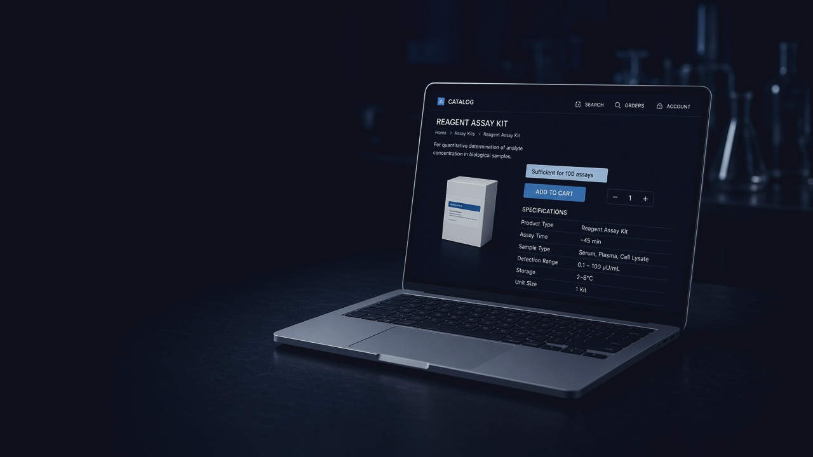
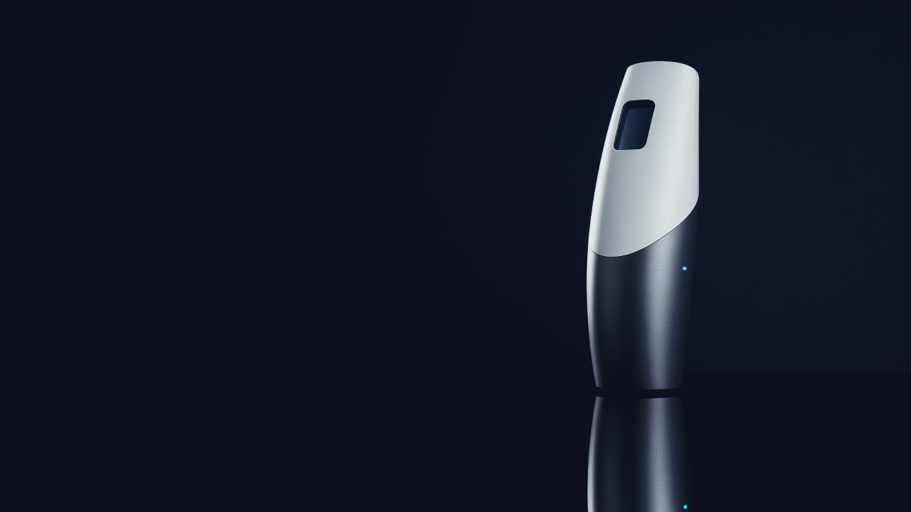
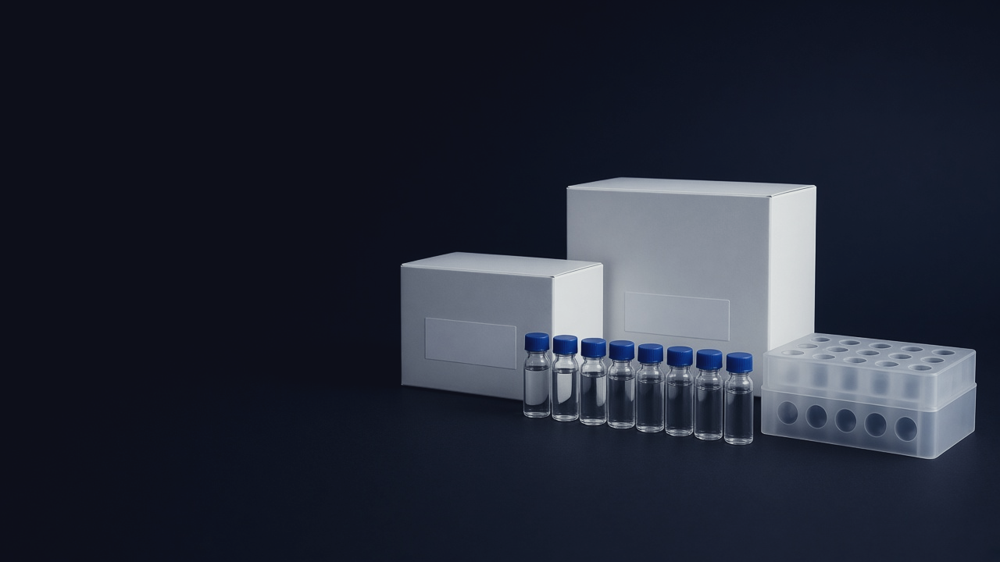
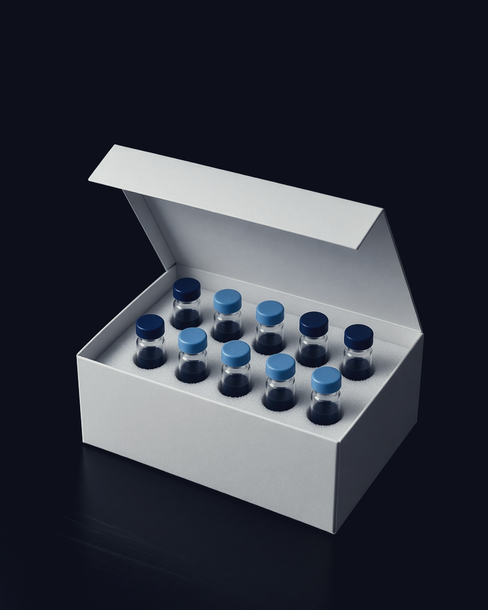
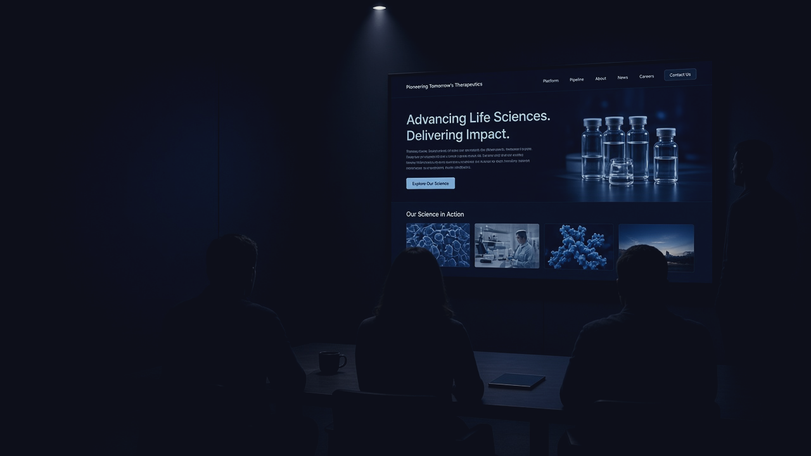
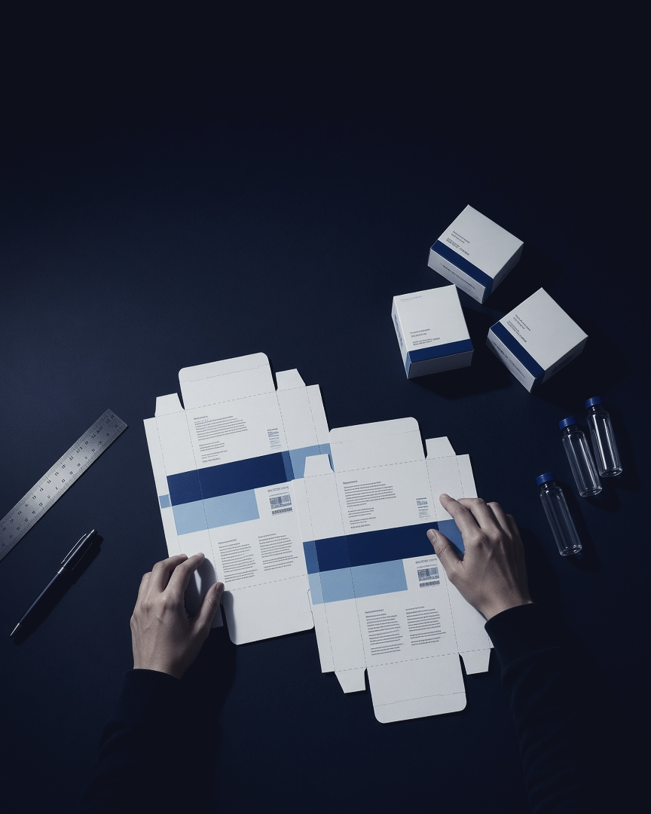
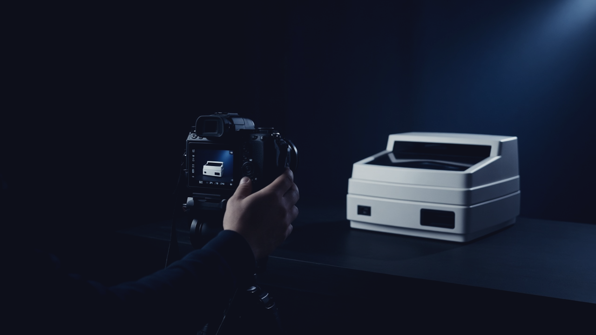

01Reagent kit product page on laptop
Ecommerce · Capabilities hero, ecommerce case study

04Handheld device on black, one key light
Med-device launch · Full-bleed hero

02Kit boxes, vials and tube rack, catalog shoot
Product content · Media + text, catalog/ecomm page
 03
03Gloved hands ordering on a tablet at the bench
B2B buyer moment · 4:5 card

11Open reagent kit, blue-capped vials
Packaging / catalog · 4:5 card

05Team, backs turned, reviewing a site on a wall screen
Strategy / Approach · Media + text
 07
07Dark booth, launch visual, attendees turned away
Launches & events · Case-study band
 06
06Gloved hand, mobile checkout (screen soft)
Mobile ecomm · 4:5 card, bento tile

12Hands reviewing carton dielines and proofs
Packaging design · 4:5 card, Design tab
 08
08CRM funnel dashboard on a monitor (labels soft)
Data & CRM / HubSpot · Bento, Development tab
09
Curved glass HQ at night
Enterprise scale · About, section break

10Camera shooting a benchtop instrument
Content production · Design / Approach